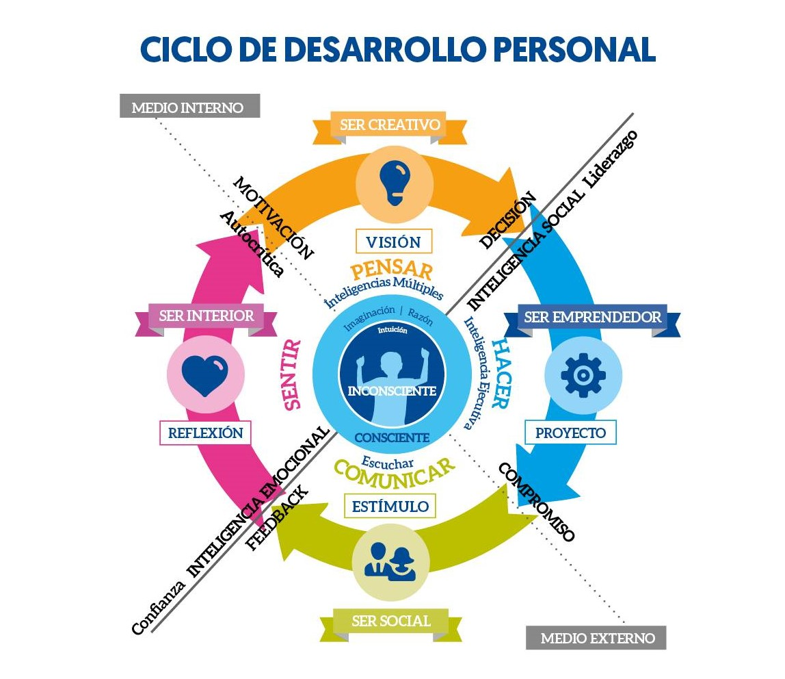

Ser Creativo (Pensar tu VIsión con Múltiples Inteigencias) >DECISIÓN>LIDERAZGO> Ser Emprendedor (Hacer Proyectos con Inteligencia Ejecutiva) >COMPROMISO> Ser Social (Comunicar Estímulos con Escucha) >FEEDBACK>CONFIANZA> Ser Interior (Sentir con Reflexión) >AUTOCRÍTICA>MOTIVACIÓN> Ser Creativo...
